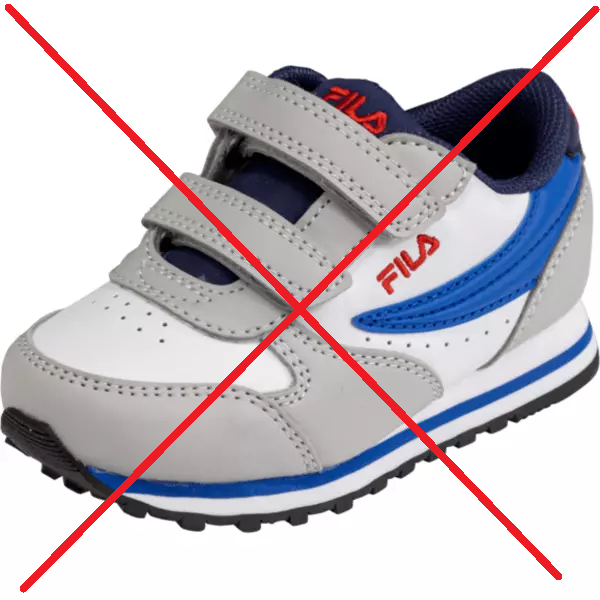
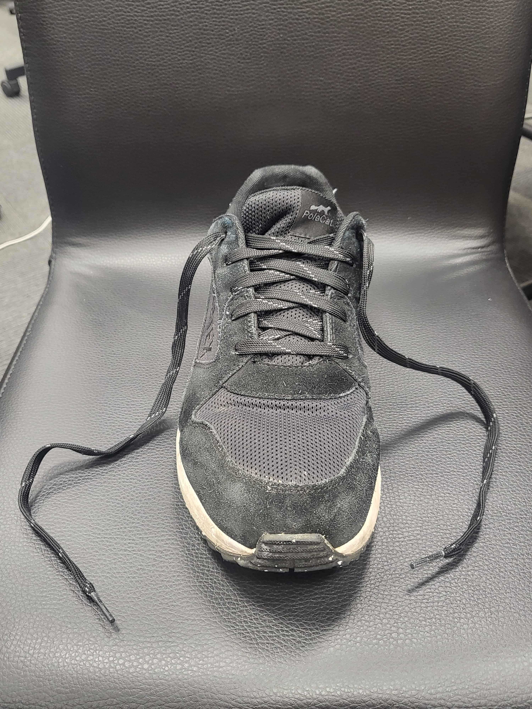
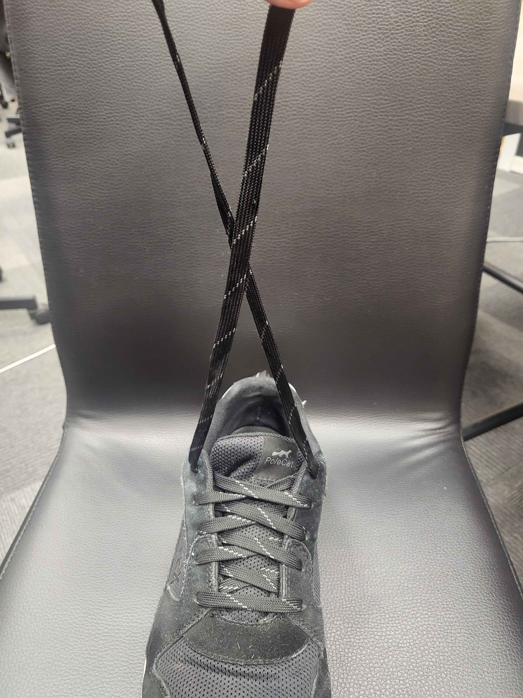
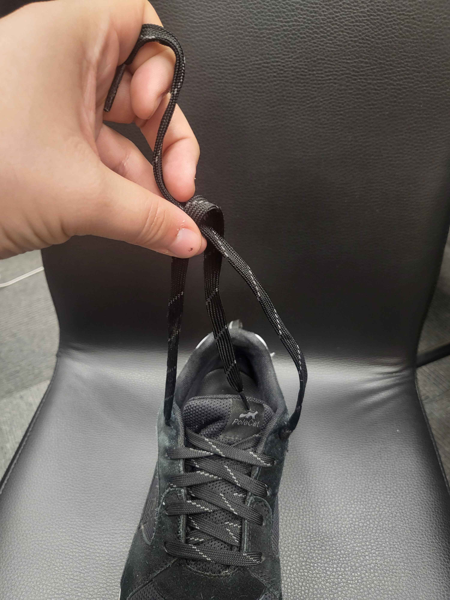

Steg 1
Finn frem en sko med uknytte skolisser. Det er viktig at man ikke velger sko med borrelås
 
Steg 2
Ta de uknytte skolissene, kryss dem, og tre en ende under kryssningspunktet. Deretter dra i endene for å stramme knuten.

